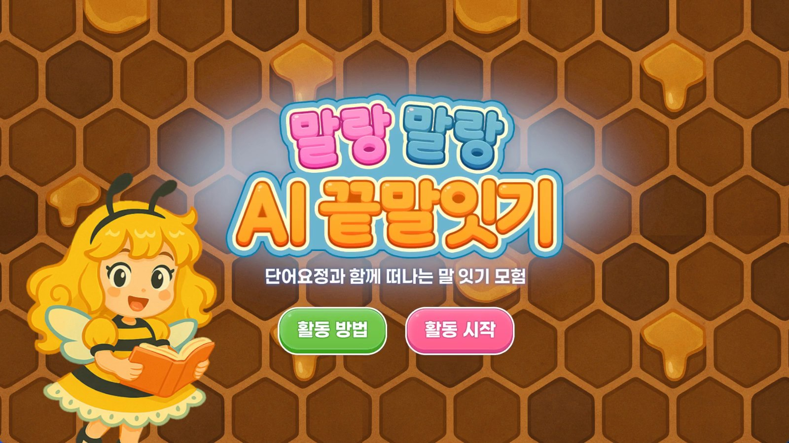

2025 · 학술연구 우수상 · 단독 개발
AI와 끝말잇기
단어 요정 ‘마리’와 끝말잇기를 주고받는 대화형 단어 게임입니다. 이 작업을 정리한 논문으로 학술연구 우수상을 받았습니다.

‘말랑말랑 AI 끝말잇기’는 단어 요정 ‘마리’와 함께 끝말잇기 모험을 떠나는 게임입니다. 사용자가 단어를 입력하면 실시간으로 검증하고, AI가 다음 단어를 만들어 음성으로 말해 주며 게임을 이어 갑니다.
왜 어려운가 · 한국어 끝말잇기는 두음법칙(‘녀→여’, ‘률→율’)과 품사, 중복 같은 규칙이 얽혀 있어 단어 데이터베이스만으로는 자연스럽게 이어 가기 어렵고, 언어 모델에만 맡기면 규칙을 자주 어깁니다. 그래서 GPT-4가 단어 후보를 만들고, 한국어 규칙 엔진이 비속어·비표준어, 두음법칙, 중복을 검사해 통과한 단어만 내보내는 하이브리드 구조로 설계했습니다. 맞지 않으면 최대 3번까지 조건을 좁혀 다시 생성합니다.
구현 · 클라이언트는 Unity 6(C#)로 입력, 말풍선 UI, 제한 시간 타이머, 점수, 음성 재생을 맡고, 서버는 Python FastAPI로 단어 검증과 생성, 음성 합성(Google Cloud TTS)을 처리합니다. 단어 생성과 음성 합성을 비동기로 나누고 같은 단어의 음성은 캐시해서, 응답을 기다리는 동안에는 타이머를 멈추도록 했습니다.
결과 · 500회 생성에서 규칙 준수율 97.2%, 평균 응답 시간 0.74초를 기록했고, 30명 사용자 평가에서 재미 4.6, 자연스러움 4.4, 응답 속도 만족도 4.5점(5점 만점)을 받았습니다.
기획부터 AI 로직, 서버, UI, 음성 연동, 논문 작성까지 혼자 했습니다.